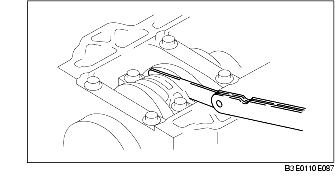
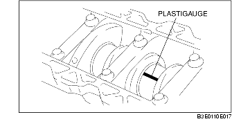
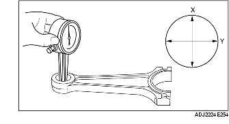
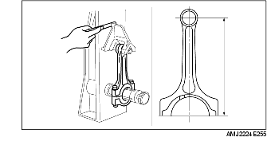

Connecting rod inspection
1. Install the connecting rod cap. (See Connecting Rod Cap Assembly Note.)
2. Measure the connecting rod large end side clearance using a feeler gauge.

- Standard side clearance
- 0.11-0.262 mm {0.0044-0.0103 in}
- Maximum side clearance
- 0.435 mm {0.0171 in}
3. Measure the connecting rod large end side clearance using a plastigauge.

- • If it exceeds the maximum specification, replace the bearing or grind the crank pin, and use oversize bearings so that the specified clearance is obtained.
- • Cut the plastigauge as wide as the connecting rod bearing width, place it parallel to the crankshaft, keeping away from the oil hole.
- Standard oil clearance
- ZJ: 0.028-0.048 mm {0.0012-0.0018 in}
- ZY, Z6: 0.016-0.037 mm {0.0007-0.0014 in}
- Maximum oil clearance
- 0.10 mm {0.0039 in}
Connecting rod bearing
4. Measure the connecting rod small end using a caliper gauge.

- Standard inner diameter
- ZJ: 17.943-17.961 mm {0.7065-0.7071 in}
- ZY, Z6: 18.943-18.961 mm {0.7458-0.7464 in}
5. Calculate the clearance between the connecting rod small end inner diameter and the piston pin outer diameter. If not within the specification, replace the connecting rod or the piston pin.
6. Inspect the connecting rod for bending and distortion using a connecting rod aligner.

- Maximum bending
- 0.050 mm {0.0019 in}
- [Per 50 mm {1.97 in}]
- Maximum distortion
- ZJ: 0.050 mm {0.0019 in}
- [Per 50 mm {1.97 in}]
- ZY: 0.075 mm {0.0029 in}
- [Per 50 mm {1.97 in}]
- Z6:0.050 mm {0.0019 in}
- [Per 50 mm {1.97 in}]
- Center-to-center distance
- ZJ: 140.05-140.15 mm {5.514-5.517 in}
- ZY: 140.60-140.70 mm {5.536-5.539 in}
- Z6: 135.15-135.25 mm {5.321-5.324 in}